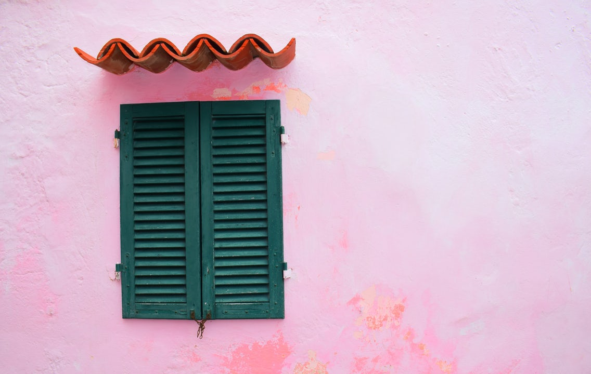

Visiting the pastelle city
By Jerry Henderson, in Toursm

view all photos
As yoy drive into the town from Alicante ariport you will pass between two lakes - one is blue/green and ather is an imopressive pink colour.